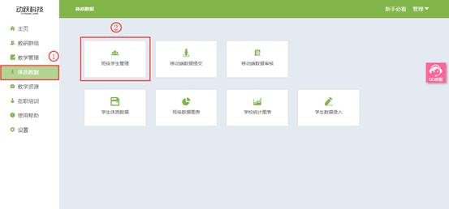

班级学生管理
视频教程：
对班级学生数据的修改及查看，完善学生的更多信息。
1. 登录动跃体育教学管理平台后，进入平台操作界面。
2. 点击进入体质数据 > 点击班级学生管理按钮，如下图:

3. 进入班级学生管理页面，点击选择需要查看的数据条件，可查看所有年级包含的所有学生的信息，选择完成后，在下方显示所有符合条件的学生列表。

4. 班级学生数据多项时查看可向前向后翻页查看，选择学生列表中，需要查看与操作的学生信息，根据学生情况进行操作。
>转班：学生所在的班级，因学生的学习情况或其他原因转换到别的班级，可一键把学生所有信息转到另外一个班级所属。
>退学：学生所在的班级，因学生的学习情况或其他原因需要退学，可选择退学，消除该学生信息。
5. 页面显示筛选下符合条件的信息，在页面右边显示学生单项指标的对比，点击【所有】按钮，页面展示所有所选学生的所有指标的成绩对比；选择学生列表中，想要查询学生的详细信息，点击名字文本，进入学生个人体质分析结果页面。
6. 学生个人体质分析结果页面，显示个人信息、综合评分、素质统计图、单项指标以及学生单项素质成绩折线图分析。
>身体素质：人体在活动中所表现出来的力量、速度、耐力、灵敏、柔韧等机能，身体素质是一个人体质强弱的外在表现。包括躯干及上肢、平衡、体重指标、柔韧度、躯干及下肢、肌耐力、心肺有氧、反应。
>运动素质：人体在从事体力劳动或体育运动时，各器官系统表现出的各种机能能力，包括力量、耐力、柔韧、灵敏、速度。
>单项指标：学生在校考察的各项指标成绩。
>>折线图分析：学生在该年级的成绩与这一年级应该达到的水平对比分析，直观展示学生在该项成绩的好坏，分为优秀、良好、及格三个水平。